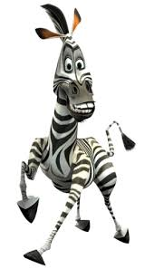
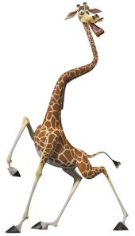
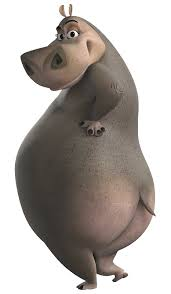
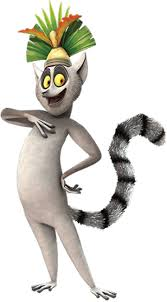
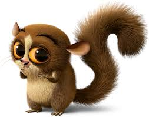
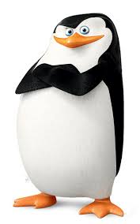
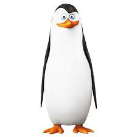

The self-proclaimed "King of New York" and the star of the Central Park Zoo. He's brave and charismatic.

"Marty the Zebra"
Alex's best friend, Marty dreams of exploring the wild and escaping the zoo.

"Melman the Giraffe"
A hypochondriac giraffe who worries about his health constantly.

"Gloria the Hippo "
The sassy and confident hippo, known for her bold attitude.

"King Julien XIII"
A lemur king, famous for his wild antics and love of dancing.

"Mort"
A small and overly affectionate mouse lemur, often obsessed with King Julien.

"Skipper"
The leader of the penguins, known for his militaristic personality.

"Kowalski"
The smart and analytical penguin, often responsible for creating plans.
The Story : Madagascar
Alex the Lion is the star attraction at the Central Park Zoo in New York City, living a life of luxury and adoration alongside his best friends: Marty the Zebra, Gloria the Hippo, and Melman the Giraffe. The zoo’s carefully controlled environment offers them comfort, regular meals, and a crowd of visitors who shower them with attention. Alex thrives on this admiration, especially since he’s considered the "King of New York," but his friends have different feelings about their life in captivity.
Marty, in particular, is restless. He begins to wonder what life would be like outside the zoo, dreaming of freedom and the wild landscapes he's never seen. On his tenth birthday, Marty’s growing curiosity reaches a peak. After overhearing zoo visitors talk about the wild, he escapes the zoo one night, determined to explore beyond the city. His sudden disappearance sends Alex, Melman, and Gloria into a panic, and they quickly set out to find him, believing that he’ll get himself into trouble.
Their adventure leads them through the streets of New York City, eventually resulting in their capture. Mistaken as dangerous animals running loose in the city, the quartet is shipped off to a wildlife reserve in Africa. But their journey takes an unexpected turn when a group of militant penguins – Skipper, Kowalski, Rico, and Private – hijack the ship, trying to redirect it to Antarctica. In the chaos that follows, Alex, Marty, Gloria, and Melman are accidentally washed ashore on the island of Madagascar.
Completely unprepared for life in the wild, the four friends struggle to adjust to their new surroundings. They are astonished by the lush, untamed environment, which is a far cry from their controlled zoo habitat. Here, they meet a tribe of lemurs, led by the flamboyant and self-obsessed King Julien XIII, who initially sees them as a threat. However, Julien soon decides to befriend them, believing their presence could help protect his tribe from the dreaded fossas, carnivorous predators that hunt the lemurs.
While Marty is excited by their newfound freedom, Alex becomes increasingly distressed. Used to being pampered and well-fed, he finds it hard to cope without the comfort and routine of the zoo. As time passes, Alex’s carnivorous instincts begin to surface, and he starts to see Marty not as his best friend, but as potential prey. This shift in their relationship creates tension, especially when Alex, starved and confused, nearly attacks Marty.
The group struggles with these challenges, but through a series of humorous and heartfelt moments, they learn valuable lessons about friendship, survival, and the importance of understanding their true nature. Alex ultimately reconciles with his wild instincts and his love for his friends, realizing that while life outside the zoo is unpredictable and tough, it also offers a sense of freedom that he never knew he needed.
In the end, despite their many misadventures, Alex, Marty, Gloria, and Melman find a new sense of belonging on Madagascar, alongside their quirky new lemur friends. They no longer rely on the comforts of their old life, embracing the wild for all its unpredictability. However, the adventure doesn’t stop there, as the penguins’ antics promise even more unexpected twists for the group in future journeys.
This story is one of self-discovery, adaptation, and the bond that holds these unlikely friends together in a world they never imagined they’d have to survive in.